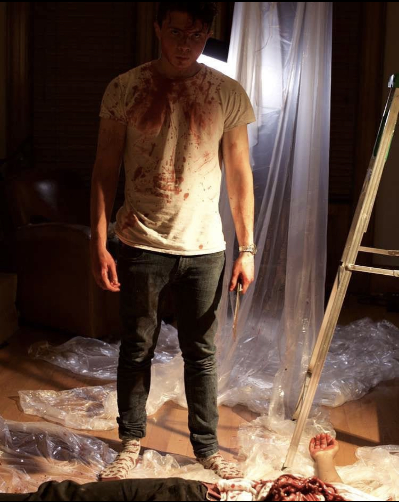

Empty
Projects I have worked on:
Shank
"Shank" the first film me and my friends ever made in our film class. We were given about 2 weeks to write a whole script and drawing of each scene and than 2 weeks to film and present it to the class.
Since it was our first film we were told to keep the film nice and simple. So our film was a silent film, we relied on our movements,face expressions, and camera angles in order to tell a story and keep it suspenseful for the class to watch.
After presenting this film we noticed the class enjoyed it. Since there were many projects to come in the future, we kept the series and making it fit into the requirements needed to get a good grade while doing so. We end the series in Shank 3.
Since all the projects were in the school hard drives that they gave us, I couldn't get a copy. But this image is the last image ever taken before the series ended.(The guy in the picture is my friend and everything else is props and fake blood).